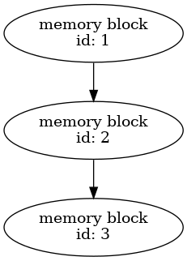
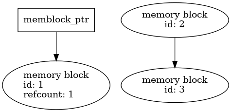
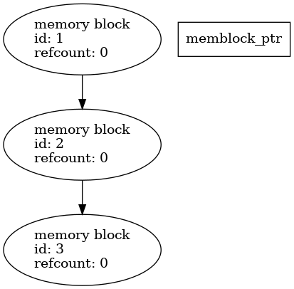
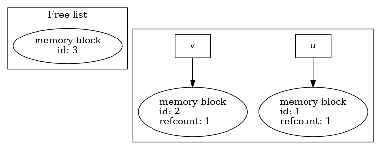
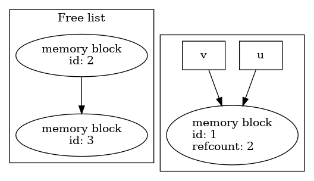

Derived type calculus based on a simple memory pool
Table of Contents
1. Objective
This document describes a simple memory management strategy enabling the manipulation of objects without repeated memory allocation or data copy. For instance
type(field_t) :: u, v !... w = v + 2. * u
would likely result in 2 allocations for intermediate evualuations
(2. * u and v + 2. * u) as well as a data copy for the assignment.
Instead, an implementation based on a memory pool can make such expressions work with pre-allocated memory blocks. Therefore no intermediate allocation and data copy are needed.
2. Memory pool as a linked list
The memory pool is implemented as a linked list of memory blocks (i.e. a free list). Each memory block as equal size.

Allocation from the memory pool is equivalement to popping a memory block off the front of the list, and releasing a memory block is equivalent to pushing it back to the front of the list.
In practice, the memory pool is constructed, and the blocks allocated with:
call init_memory_pool(nblocks, size)
Applications can request a block from the memory pool using the
get_memory_block function.
use pool_module, only: memory_block_t, get_memory_block type(memory_block_t), pointer :: memblock_ptr memblock_ptr => get_memory_block()
The get_memory_block function returns a pointer to memory_block_t,
which target is the head of the memory block list.

A memory block can be released to the memory pool using the
unbind_or_release subroutine.
call unbind_or_release(memblock_ptr)
A memory block's metadata include its reference count, an integer
counting the number of pointers pointing to the memory block. A
memory block available in the memory pool has a reference count of 0.
Assignment of a memory block to a memory_block_t pointer increments
it reference count by 1. The unbind_or_release subroutine
decrements the reference count of the memory block targeted by
memblock_ptr. If the blocks's reference count reaches 0, the block
is released to the memory pool: it is pushed back to the front of the
free list.

Finally , the memory pool can be destroyed, and all its memory blocks deallocated, with
call finalise_memory_pool()
3. Derived type calculus using the memory pool
We introduce a derives type field_t that holds a pointer to a memory block
type field_t type(memory_block_t), pointer :: data => null() contains ! ... end type field_t
A field_t object is assigned a memory block upon instanciation, for
instance by calling get_memory_block from the field_t constructor.
type(field_t) :: u, v ! Construct two distinct field instances u = field_t() v = field_t()
Both field_t instances u and v hold a pointer to a different
memory block:

By default, an assignment statement like v=u would result in a copy
or automatic allocation on assignment. Instead, the field_t
assignement operator is defined to redirect v's memory block pointer to u's.
v = u ! Now both u and v data pointer points to the same memory block

Notice how the reference count for memory block 0 is increased to two.
Objects of type field_t automatically release the memory block they
point to when they are on the left hand side of an assignment or
passed to a procedure in which the corresponding dummy argument as the
intent(out) attribute. This behavior comes from marking the field
destructor as final in the field_t derived type definition (see [5]).
Let's unpack what happens in an assignment statement such as
v = u
- Memory block targeted by
v'sdatapointer is released, or its reference count decremented, throughunbind_or_release. v's data pointer is made to point to the target ofu's data pointer (v%data => u%data).- The reference count for the targeted memory block is increased by 1.
4. References
- [1] Pool in More Depth (Boost.Pool documentation)
- [2] Chapter 4 - Boost.Pool (The Boost C++ Libraries)
- [3] Free list (Wikipedia)
- [4] Simple free list allocator (ANU's Systems, Networks, and Concurrency course).
- [5] Modern Fortran Explained, Incorporating Fortran 2018 (5th ed) (Sections 15.11 Finalization, 2.12 Pointers and 3.13 Pointers in expressions and assignments).